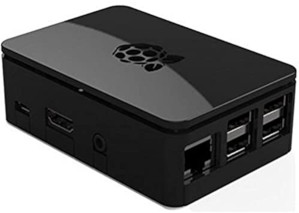

ecoHub¶
EcoHub esta se instala en una Raspberry Pi y esta basado en el software de open energy monitor
La principal función de ecoHub es leer los datos recibidos desde el módulo de radio RFM69CW para darles el formato adecuado y transmitirlos al servidor de Internet de la Energía(IoE). La configuración del comportamiento de este módulo se especifica en el fichero emonhub.conf.
ecoHub implementa también una serie de interfaces que pueden leer/suscribirse o enviar/publicar datos hacia y desde una multitud de servicios.
Características principales¶
Bus de publicación y subscripción de MQTT
Transmisión de datos al servidor Internet de la Energía
Es posible implementar varios interfaces y ampliarlos de forma dinámica
Depuración de errores y revisión del comportamiento mediante logs
Interfaces¶
El desarrollo de interfaces es la forma de incluir nuevos dispositivos, a través de sus protocolos, en las redes de Internet de la Energía.
Los interfaces mas utilizados en ecoHub son los siguientes:
EmonHubJeeInterfacer: Recibe y decodifica los datos del módulo de radio RFM69CW según la estructura de datos de JeeLabs
EmonHubMqttInterfacer: Publica los datos decodificados en MQTT
Otros interfaces que es posible implementar son:
Direct Serial
Victron Products
ModBus FRONIUS Solar inverter
Graphite timeseries DB
SMASolar